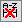

Dialog für Ordner- und Fenstereigenschaften
Folder-Win-Properties-Dialog
| Dialog Fenstereigenschaften |
Dialog Ordnereigenschaften |
|
|
Dialog öffnen
Zum Aufrufen des Dialogs Ordnereigenschaften gibt es mehrere Möglichkeiten:
- Klicken Sie mit der rechten Maustaste auf den Ordner im Projekt Explorer und wählen Sie Eigenschaften im Kontextmenü.
- Aktivieren Sie den Ordner im Projekt Explorer und drücken Sie Alt+Enter.
- Klicken Sie auf die Schaltfläche Dialog Ordnereigenschaften öffnen
 auf der Minisymbolleiste
auf der Minisymbolleiste
- Führen Sie das LabTalk-Skript folder -p; im Skriptfenster aus.
Zum Aufrufen des Dialogs Fenstereigenschaften gibt es mehrere Möglichkeiten:
- Aktivieren Sie das Fenster und wählen Sie dann Fenster: Eigenschaften im Hauptmenü.
- Klicken Sie mit der rechten Maustaste auf die Titelleiste des Fensters und wählen Sie im Kontextmenü Eigenschaften.
- Aktivieren Sie das Fenster und drücken Sie Alt+Enter.
Schaltflächen
Die folgenden Schaltflächen befinden sich oben im Dialog.
|
|
Mit den Schaltflächen Zurück und Weiter können Sie von einem Ordner/Fenster zum anderen wechseln.
|
|
oder
|
Mit der Schaltfläche Fenster/Ordner können Sie zwischen den Dialogen der Eigenschaften von Ordner und Fenster unter diesem Ordner wechseln.
Hinweis: Wenn es in einem Ordner kein Unterfenster gibt, wird die Schaltfläche Fenster abgeblendet angezeigt.
|
Registerkarte Eigenschaften
Dialog Ordnereigenschaften
- Sie können Name und Kommentare in diesem Dialog festlegen.
Dialog Fenstereigenschaften
- Geben Sie Langname, Kurzname und Kommentare ein und legen Sie fest, dass Langname, Kurzname oder Beides im Fenstertitel gezeigt werden.
- Verwenden Sie die Vorschau, um den Typ der Popup-Vorschau zu steuern, der im Unterfeld des Projekt Explorers verwendet wird.
- Vereinfachte Zellennotation: Die vereinfachte Zellennotation (SCN) beschränkt die Spaltenkurznamen auf nummerierte Spaltenbuchstaben, so dass A anstatt von col(A) verwendet werden kann und A1 anstatt von col(A)[1] if F(x).
-
- Seit Version 2017 benennt Origin Spaltenkurznamen automatisch und ordnet sie neu, wenn Sie eine Spalte in das Arbeitsblatt einfügen oder innerhalb verschieben. Spaltenkurznamen können daher als Notation in der Spaltenformel verwendet werden, wie z.B. A+1 anstatt col(A)+1.
- In diesem Standardmodus können Sie einen Spaltenkurznamen nicht ändern oder bearbeiten. Um die Bearbeitung zu ermöglichen, deaktivieren Sie dieses Kontrollkästchen oder führen Sie
page.xlcolname=0 im Skriptfenster aus, um die Excel-ähnliche Beschränkung der Spaltenkurznamen zu deaktivieren. Weitere Informationen finden Sie unter FAQ-849 Kann ich die Zellennotation in meinen Arbeitsmappen ausschalten bzw. selektiv steuern?
- Seit Origin 2017 und der Einführung der vereinfachten Zellennotation (SCN) bis Origin 2019 zeigte dieses Symbol
 in der oberen linken Ecke des Arbeitsblatts an, dass SCN aktiviert war. Seit Origin 2019b ist dieses Symbol verborgen, auch wenn die SCN für neue Arbeitsmappen per Standard aktiviert bleibt.
in der oberen linken Ecke des Arbeitsblatts an, dass SCN aktiviert war. Seit Origin 2019b ist dieses Symbol verborgen, auch wenn die SCN für neue Arbeitsmappen per Standard aktiviert bleibt.
- Wenn Sie dieses Symbol  in einer aktuellen Version sehen, ist SCN in der Arbeitsmappe ausgeschaltet. Sie können dies feststellen, indem Sie den Status des Kontrollkästchens Zellennotation für Tabellenkalkulationsblätter prüfen.
- Nicht verwendete Zellen mit einem schattierten Hintergrund kennzeichnen Wenn diese Option aktiviert ist (Standard), werden "nicht verwendete" Zellen schattiert -- "nicht verwendete" Zellen sind die Zellen, die nicht für die Zeichen- und Analyseoperationen verwendet werden, wenn zum Beispiel die gesamte Spalte ausgewählt ist. Im folgenden Bild wurde die Schattierung verstärkt, um einen deutlichen Kontrast zwischen verwendeten und nicht verwendeten Zellen zu zeigen.
-
-
Beachten Sie, dass schattierte Zellen immer leer sind, dass aber auch nicht schattierte Zellen leer sein können, wenn sie zwischen Zellen fallen, die etwas enthalten -- auch wenn dieses Etwas nur ein Symbol für einen fehlenden Wert ist ("--").
- Importierte Daten beim Speichern eines Projekts ausschließen. Wenn Sie ein Projekt (als .opju) oder ein Arbeitsmappenfenster (als .ogwu) speichern, werden die importierten Daten in der Arbeitsmappe mit diesem aktivierten Kontrollkästchen gelöscht, während andere Daten (aus der Berechnung oder einer anderen Operation) dies nicht werden. Es werden Daten gelöscht, die folgendermaßen importiert wurden:
-
- Allgemeine Hilfsmittel für den Dateiimport - die meisten Elemente unter Daten: Aus Datei importieren
- Datenkonnektoren - Zugriff über Daten: Mit Datei verbinden/Mit Web verbinden
- Datenbankimport - Zugriff über Daten: Aus Datenbank
Hinweis: Im Fall von Daten, die mittels Datenkonnektoren importiert wurden, ist dieses Kontrollkästchen äquivalent zum Menü Importierte Daten beim Speichern ausschließen, auf das Sie über Rechtsklick auf das Symbol des Datenkonnektors Zugriff haben.
Registerkarte Anwenderbaum
Die Registerkarte Anwenderbaum des Dialogs Ordner-/Fenstereigenschaften ermöglicht es Ihnen, den Anwenderbaum, der mit dem aktuellen Ordner/Fenster verbunden ist, anzuzeigen und zu bearbeiten. Sie ist nicht auf Notizfenster anwendbar.
Um den Anwenderbaum zu bearbeiten, klicken Sie mit der rechten Maustaste auf einen Baum oder einen Knotenpunkt und wählen Sie anschließend einen gewünschten Befehl im Kontextmenü:
| Umbenennen |
Der aktuelle Baum oder Knoten wird umbenannt oder neu beschriftet. Der Dialog Baumknoten umbenennen wird geöffnet. Beachten Sie, dass der Baum- oder Knotennamen nur Buchstaben und Zahlen unterstützt. Außerdem sollte das erste Zeichen ein Buchstabe sein. |
| Löschen |
Dieser Befehl löscht den aktuellen Baum oder Knoten. |
| Baum hinzufügen |
Dieser Befehl fügt auf dieser Registerkarte einen Anwenderbaum hinzu. |
| Knoten hinzufügen |
Wählen Sie diese Option, um einen neuen Knoten unter den aktuellen Baum oder Knoten hinzuzufügen. Dies öffnet den Dialog Baumknoten hinzufügen und ermöglicht es Ihnen, den Namen und den Typ des Knotens festzulegen. Verfügbare Typen beinhalten Numerisch, Text und Zweig. |
|
Hinweis: Die Werte einiger Knoten können nicht bearbeitet werden, z.B. die Knoten, die beim Importieren automatisch hinzugefügt werden. In diesem Fall werden die Werte blau angezeigt.
|
Registerkarte Informationen
Die Registerkarte Info des Dialogs Ordner-/Fenstereigenschaften zeigt die grundlegenden Informationen des aktuellen Ordners/Fensters, einschließlich Typ, Größe, Inhalt, Erstellungsdatum, Speicherort etc.